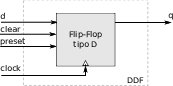

E - Lógica Sequencia¶

Neste projeto você terá que desenvolver os componentes de memória que serão utilizados no computador Z01.
Instruções¶
A pasta do projeto E-LogicaSequencial no repositório Z01, possui a seguinte estrutura:
/E-LogicaSequencial
testeLogicaSequencial.py
/Quartus
/src
/rtl
*.vhd
/tests
/tst
*.vhd
- Quartus: Projeto Quartus que faz uso dos arquivos VHDL localizados em
src/rtl/*.vhd; - scripts: Scripts em python que automatizam a execução dos testes;
src/rtl/*.vhd: Arquivos VHDL que serão implementados pelo grupo;tests/tst/*.vhd: Arquivos VHDL que realizam o teste lógico nos arquivos do rtl.
Executando o Script de Teste¶
Abra o terminal na pasta E-LogicaSequencial e execute o script python localizado nessa pasta:
$ python testeLogicaSequencial.py
O mesmo irá compilar os arquivos src/rtl/*.vhd e executar os testes unitários em cada um deles. Nesse momento do teste, como os módulos não estão implementados, o resultado deverá ser falho.
Note
Lembre que o arquivo tests/config.txt define quais testes serão executados.
Projeto¶
- Deve-se gerar uma imagem com a forma de onda desses módulos.
- Deve-se gerar um RTL para cada módulo do projeto (
E-LogicaSequencial-Lab-1) - Note que é possível reaproveitar, via
port map, os módulos dos projetos anteriores. Para isso basta declarar o componente e usar o módulo.
Módulos¶
Esses arquivos estão localizados em E-LogicaSequencial/src/rtl/ e detalhados no Capítulo 3 - The Elements of Computing Systems
- Flip Flop
- Arquivo:
FlipFlopD.vhd - Dependência:
É é um bloco elementar e sua implementação é criada no laboratório do projeto.

- Binary Digit
- Arquivo:
BinaryDigit.vhd - Dependência:
FlipFlopDeMux2Way - Descrição : É um registrador feito para armazenar um único bit de informação (0 ou 1). A interface do módulo consiste em uma entrada (d) para o bit a ser armazenado, um sinal de load para indicar quando o bit de entrada deve ser armazenado um sinal de clock e a saída output* que é o bit armazenado:
- Arquivo:

- Register 8
- Arquivo :
Register8.vhd - Dependência :
BinaryDigit - Descrição : É um registrador de 8 bits criado a partir do binaryDigit porém agora para armazenar um vetor de entrada de 8 bits de tamanho.
- Arquivo :

- Register 16
- Arquivo :
Register16.vhd - Dependência : Register8
- Descrição : É um registrador de 16 bits criado a partir do Register8 porém agora para armazenar um vetor de entrada de 16 bits de tamanho.
- Arquivo :
- Register 32
- Arquivo :
Register32.vhd - Dependência :
Register16 - Descrição : É um registrador de 32 bits criado a partir do Register16 porém agora para armazenar um vetor de entrada de 32 bits de tamanho.
- Arquivo :
- Register 64
- Arquivo :
Register64.vhd - Dependência :
Register32 - Descrição : É um registrador de 64 bits criado a partir do Register32 porém agora para armazenar um vetor de entrada de 64 bits de tamanho.
- Arquivo :
- Program Counter
- Arquivo :
PC.vhd - Dependência :
inc16,mux16,reg16 - Descrição : O program counter será o nosso endereçador de memória da CPU, ele será responsável por apontar para a próxima instrução a ser executada. Como normalmente um código segue um fluxo sequencial (uma linha na sequência da outra) o PC possui a habilidade de se auto incrementar a cada clock (apontando assim para a próxima instrução), mas ele tem que suportar condições (if, while, ...) rompendo com esse fluxo contínuo.
- Arquivo :
Sua lógica é descrita no pseudo código a seguir:
If reset(t-1) then out(t)=0 else if load(t-1) then out(t)=in(t-1) else if inc(t-1) then out(t)=out(t-1)+1 else out(t)=out(t-1)
- Ram8
- Arquivo :
Ram8.vhd - Dependência :
Register16,Mux8Way16,Dmux8Way - Descrição : É uma memória de 8 endereços com 16 bits de largura. O componente possui como entrada o vetor input de 16 bits, o endereço a ser armazenado (address) o sinal load que indica quando é para ser armazenado e o clock. Como saída temos o valor lido no endereço especificado quando load for igual a 0. Note que sinal LOAD tem como função similar o do READ/WRITE, quando zero, indica que queremos ler o valor armazenado, quando 1 indica que queremos escrever (write) nessa posição.
- Arquivo :

- Ram64
- Arquivo :
Ram64.vhd - Dependência :
Ram8,Mux8Way16,Dmux8Way - Descrição : Similar a RAM8 porém com 64 endereços.
- Arquivo :
- Ram512
- Arquivo :
Ram512.vhd - Dependência :
Ram64,Mux8Way16,Dmux8Way - Descrição : Similar a RAM8 porém com 512 endereços.
- Arquivo :
- Ram4k
- Arquivo :
Ram4k.vhd - Dependência :
Ram512,Mux8Way16,Dmux8Way - Descrição : Similar a RAM8 porém com 4512 endereços.
- Arquivo :

Tip
Todos esses módulos estão bem documentados no livro The Elements of Computer System. Cap 3.
Forma de onda¶
Para cada teste realizado, deve-se carregar a interface gráfica do simulador e tirar um print da forma de onda do módulo com os testes aplicados a ele. Essa imagem deve ser salva na mesma pasta dos arquivos vhdl (src/doc/*_wave.png) e com o mesmo nome dos módulos (similar ao projeto passado).
Warning
Não basta só gerar a imagem, você precisa analisar e entender. Isso será cobrado nas avaliações.
RTL¶
Para cada módulo deve-se gerar o RTL e salvar uma imagem da implementação na pasta src/doc/_rtl.png.
!! warning Não basta só gerar a imagem, você precisa analisar e entender. Isso será cobrado nas avaliações.
Testando em Hardware¶
No hardware você deverá desenvolver um cenário de teste para o Program Counter ou para para a RAM8.
Rubricas para avaliação de projetos¶
Cada integrante do grupo irá receber duas notas: uma referente ao desenvolvimento total do projeto (Projeto) e outra referente a sua participação individual no grupo (que depende do seu papel).
Projeto¶
| Conceito | |
|---|---|
| I | - Menos da metade dos módulos funcionando |
| D | - Ao menos um módulo não foi implementando ou não passa no testes. |
| C | - Todos os módulos sendo testados no Travis |
| - O ramo master passa nos testes do travis | |
| - Todos os módulos passam nos testes | |
| - Possui a forma de onda e rtl de todos os módulos (.png) | |
| B | - Usou sempre que possível outros módulos para criar um novo (hierarquia) |
- Exemplo: usou o inc16, mux16 e reg16 para criar PC |
|
| A | - Gravou e testou a memória RAM8 na FPGA. (gravou um vídeo para mostrar o funcionamento) |